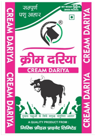

GIRIK FEEDS
GIRIK FEEDSProduct Card

Girik Cream Dariya
“For gentle buffaloes milking above 10 litres”
Characteristics:
- Helps in increasing fat with milk yield.
- Rich in vitamins and nutrients.
Benefits:
- Increases milk yield and drags the milk of the porch for a long time.
Dose quantity:
- For every 2litres of milk, give 1 kg of feed mixed with green / dry feed.
$10.99
Product Card

GirikDoodh Dariya
“Features for cows milking up to 10 litres”
Characteristics:
- Balanced dosage for milking cows.
- Use of high-quality raw materials.
Benefits:
- Higher milk yield.
- Fat and S. N. F. Greater percentage of.
- It gives strength to the cow internally and makes it fit.
Dosage quantity:
- Add 1 kg feed for 2.5 litres of milk mixed with green / dry feed available on the farm.
$10.99
Product Card

Girik Milk Promoter 5000
“Full dose for cows milking up to 15 litres”
Characteristics:
- Rich in vitamins and nutrients.
- 1.55 NEL Energy.
Benefits:
- Improvement in milk production and reproductive system.
Dose quantity:
- For every 2 litres of milk, give 1 kg of Feed mixed with green / dry feed.
$10.99
Product Card

Girik Milk Promoter 8000
“Complete and high energy dosage of cows milking up to 20 litres”
Characteristics:
- Balanced animal feed for milking cows.
- Proper diet for pregnant cow.
- High quality vitamins and minerals.
Benefits:
- Higher milk yield.
- Fat and S. N. F. Greater percentage of.
- B.B. C. S. And improve the milk of the next womb.
Dose quantity:
- Mix with green / dry feed available on 1 kg feed farm for 2.5 litres of milk.
$10.99
Product Card

Girik Calf Starter Nutri
”Pellet feed for 03-month calf”
Characteristics:
- Balanced amino acids.
- Vitamin A, D, E. O and B Complex.
- Balanced starch and digestible Fibre.
Benefits:
- Reduce the stress of weaning.
- For the development of Roman.
- Prevention of diarrhoea.
- Rapid growth of the calf.
Dose quantity:
- From the age of 4 days, reduce the milk and give 50 grams of feed with your hands.
- Use clean and adequate water.
- Do not give green / dry fodder till 40-45 days of age.
- When milk starts to eat 800-1000 grams in 3 consecutive days.
$10.99